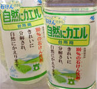
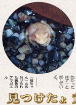
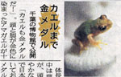
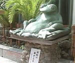
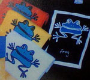

自然派洗剤「自然にカエル」発売！ 【福岡発かえる店長同志記者】カエラー御用達の洗剤が出ました。これはいいです。現在関東か関西エリア限定発売らしいですが、私はココで購入しました。
【全国かえる奉賛会】うおおおおおお。いいぞおお。カエラー待望の洗剤ですねー。小林脳行のページを見に行くと！「自然にカエル」はなぜ環境や手肌にやさしいの？ 詳しくご紹介します。食器洗いに使う洗剤について、Ｑ＆Ａ形式にて様々な問いにお答えているそうだぞおおお。 黄カエルに黄金カエルを発見！ 【富山発延喜式内杉原神社祢宜杉原秀圭同志記者】久々に富山県の地方新聞「北日本新聞」に色素異常アマガエルの記事が二日連発で掲載されましたので、その記事をお送りさせていただきます。まず黄色アマガエルの記事ですが、たいそうに「福ちゃん」と名前まで勝手につけて盛り上がっています。写真では黄色というより白色に近く、アルビノではないかと思われます。  そしてその翌日の新聞にあったのが「金メダルガエル」の記事です。福ちゃんは富山県内のカエルですが、金メダルガエルは千葉県のカエルなんですよ。それをわざわざ地方新聞に載せるなんざ北日本新聞のカエル好きもたいしたもんです。これからも暖かく北日本新聞を見守っていきたいと思います。【全国かえる奉賛会】一般紙のカエル化を支持するぞおおお。北日本新聞の偉大なカエル路線を支持するなりいい。大王も暖かく北日本新聞を見守っていきたい。編集局に激励の手紙を届けたいものであるーっ！北日本新聞のみなさん、がんばってくださいー。 北島はカエラー？ページでカエルを発見！【日本発さとう様】おはようございます。水泳の北島の公式ページで発見しました。というか、このページの標題自身がFROG TOWN！ですと？グッズも発見。缶バッジもありました。人名漢字から「蛙」が削除されることになったという悲しいニュースが先週あったのを払拭する明るいニュースですね。  「熊本市桜町の『福がえる』除幕式！【熊本天草発しげやん同志記者】町のシンボルにしようという『福がえる』の除幕式が９日、熊本市桜町であり、くまもと阪神の丸本文紀社長など関係者約２０人が出席。福が宿るようにと祈り、除幕して設置を祝った。『福がえる』は高さ７０センチ、重さ２００キロ、座布団に座ったような姿をしていて、なでたり磨いたりすることで表面の塗装がはげ、金色の下地が出てくるという。オーストラリアのカエル展！ 【福岡発エンジョイスペース大家さん】オーストラリア福岡総領事館が１３日から １９日まで、「なぜかカエルがいっぱい」展を、福岡市中央区大名のエンジョイス ペース大名で開きます。オーストラリアは知るひとぞしるカエルの国です。会場にたくさんいるカエルた ちに会いに行きましょう。会場にはグッズから、カエルＴシャツまで、たくさん跳 びはねています。 カエル新聞縮刷版を発行へ！【全国かえる奉賛会】えーみなさあああん、全国のカエラーとともに歩んでいる「かえる新聞」が創刊」八年を記念して、バックナンバーを集めた縮刷版を印刷する計画が進んでいるのである。朝日新聞縮刷版とともに、図書館に並ぶ日も近いであろう。年内発行だからなー。みんな、これまで以上に「かえる新聞」での報告をまっていてくれえええ。 携帯で携帯＠カエル新聞を吸い取ろう！ 【全国かえる奉賛会】携帯から初めてカエル新聞を見たいというひとにとっては、アドレスを打つのが難儀なものよのう！そこでドコモとボーダフォンの一部機種から、カメラをかざしてコードを読みとるんぢゃああ。なお、このQRコードを眺めていたらカエルやらオタマジャクシやらが浮かび上がってくるらしいぞおお。ほんとかああ。
【全国かえる奉賛会】携帯から初めてカエル新聞を見たいというひとにとっては、アドレスを打つのが難儀なものよのう！そこでドコモとボーダフォンの一部機種から、カメラをかざしてコードを読みとるんぢゃああ。なお、このQRコードを眺めていたらカエルやらオタマジャクシやらが浮かび上がってくるらしいぞおお。ほんとかああ。
|
メールマガジン登録
メールマガジン解除
Powered by


かえる古新聞過去に取り上げた記事を見出し付きで一覧したい人は、ここをクリック◆創刊号を見る◆先週号を見る◆話題の号を見る◆かえる新聞の昔を読む
|
私も入っています。。全国かえる奉賛会
大王様に会うには、このバナーをクリック。ずっと奥に写真館があるぞ。全国かえる奉賛会に入会するには、自分のホームページのどこかに、下の部分を追加するとバナーがリンク付きで表示されるぞ。どんどん入会しましょー |


|